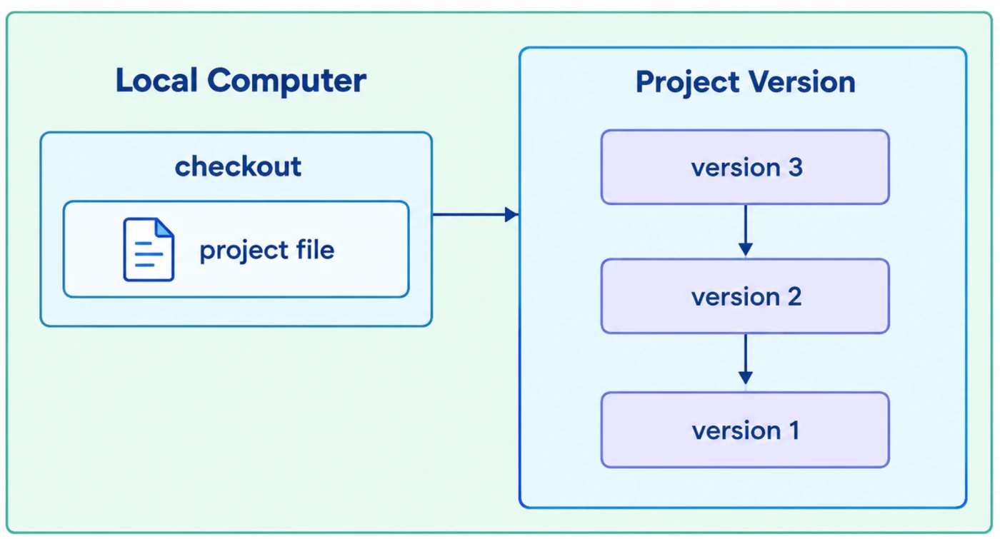
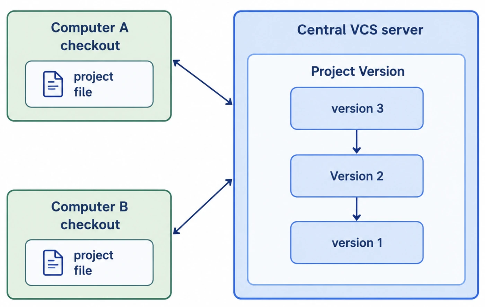
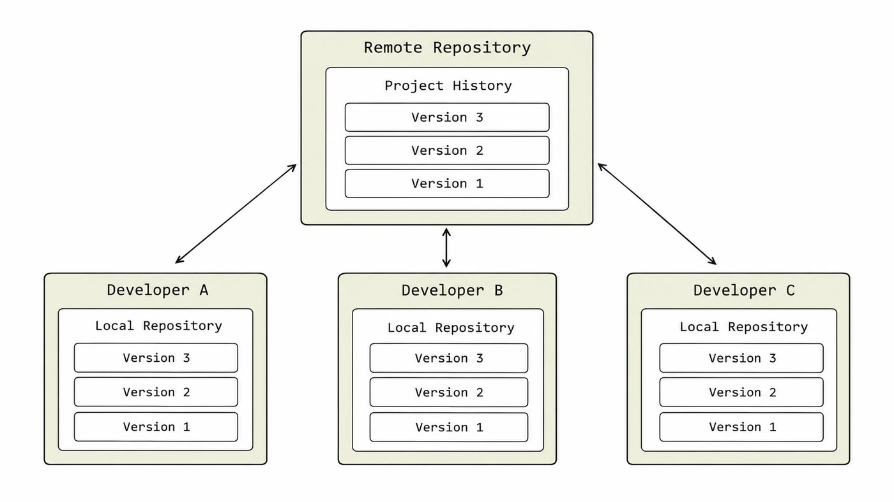
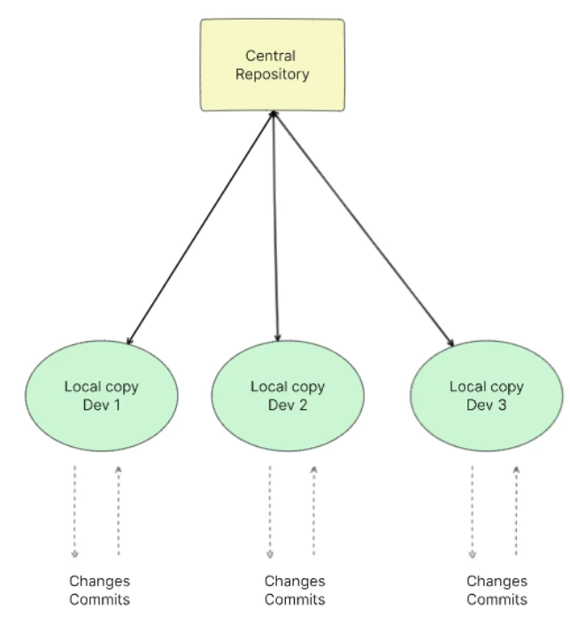
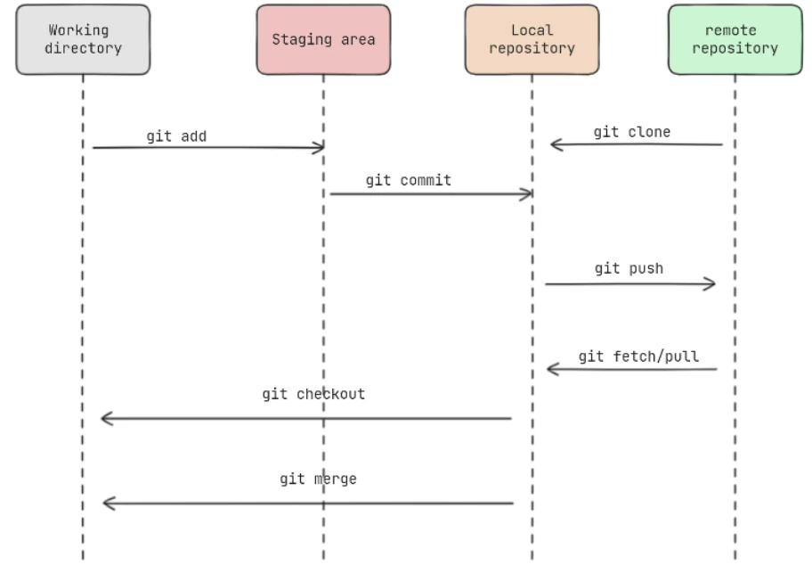

Understand why every software team keeps its code in a version control system, how the different kinds work, and get Git installed and configured on your own machine.
What is version control?
final_v2_REALLY_final.docxYou have seen this folder: report.docx, report_final.docx, report_final_v2.docx, report_final_v2_sir_changes.docx. Nobody knows which one is newest, who changed what, or how to get back last Tuesday’s version. A version control system replaces that mess with one project and a clean, labelled history of every change.
A version control system (VCS), also called source code management (SCM), is a tool that records changes to a file or set of files over time, so you can:
Track history
See every change, who made it, when, and why.
Collaborate
Let many people work on the same project without overwriting each other.
Manage versions
Keep several versions of a project and go back to any earlier one.
Version control is used most in software development, but it works for any files that need to be tracked and shared: documentation, configuration, design files, even this website. It is a must-have tool for individual developers and for teams.
A VCS keeps every saved version, in order, with a note about what changed.
Three kinds of version control
There are different types of version control systems; the most widely and commonly used come in three designs. They differ in where the history lives.
1. Local version control
The simplest form, designed for one person or a small project. A database of versions sits on your own computer, and you check out the version you want to work on.

Overview of a local VCS: everything is on one machine. Simple, but no sharing and no backup if the disk dies.
2. Centralised version control (CVCS)
One central server stores the main repository with the entire history of the project. Developers fetch the latest files from it and send their changes back to it. Examples: Subversion (SVN), CVS.

Overview of a CVCS: the computers hold checked-out files; the version history lives on the central server.
3. Distributed version control (DVCS)
Many full copies of the repository exist, and each one contains the complete history of the project. Every developer has the whole thing on their own machine; a shared remote is used to exchange work. Examples: Git, Mercurial.

Overview of a DVCS: every developer’s local repository holds the full project history, just like the remote.In a CVCS the history lives only on the server. In a DVCS every clone is a complete backup.
Question
Local
Centralised
Distributed
Where is the history?
One computer
One central server
Every copy
Work offline?
Yes
Mostly no: commits need the server
Yes: commit, browse history, branch
Server dies?
Disk dies = all lost
History lost unless backed up
Any clone can restore it
Team work?
No
Yes
Yes
Examples
RCS
Subversion (SVN), CVS
Git, Mercurial
Why do we need a VCS?
For beginners it can feel like extra ceremony. Here is what it actually buys you:
Tracking history
Every change is recorded with when and why, which makes debugging and understanding the project far easier.
Parallel development
Team members work at the same time on branches, and the VCS helps combine their changes.
Backup & recovery
If your laptop is lost or damaged, the project and its history still exist on the server (and, with Git, in every other clone).
Code reviews & quality assurance
Teammates assess code quality, adherence to standards and possible issues before changes are merged.
Experiment & roll back
Try an idea on a separate branch. If it fails, throw the branch away and the main project is untouched.
Release management
Tag the exact version you shipped, so releases are consistent and repeatable.
Traceability
An audit trail: every change documents who did what, and the message explains the decision.
Conflict resolution
When two people edit the same code, the VCS highlights the clash so it can be resolved systematically.
Open source & collaboration beyond teams
VCS tools are vital for open-source projects: thousands of strangers across the world collaborate on one codebase while maintaining code quality.
In the field (FDE) On a customer engagement, the repo history is your memory. When a customer asks “what changed since the demo last week?”, git log answers in seconds, and a tag on the demo version lets you rebuild exactly what they saw.
How a version control system works
Here is a simple explanation of how a VCS operates.
The class registerThink of a shared attendance register. Each teacher keeps a photocopy (local copy), marks today’s attendance (changes), signs and dates the page (commit), and hands it to the office to update the master register (push). Next morning they collect the updated copy (pull). A VCS is that routine, done perfectly by software.
1
RepositoryA storage location that holds all the project files and their entire history.
2
Local copyEach developer makes a personal copy of the repository on their own computer (in a DVCS like Git, this includes the full history).
3
Making changesDevelopers add, modify or delete files and code in their local copy.
4
CommittingA commit is a snapshot of the project at that moment: what changed, plus a message explaining why.
5
Tracking changesThe VCS records the differences between commits, building a history of how the project evolved.
6
Branching and mergingWork on a feature or fix in a separate branch; when it is done, merge it back into the main project.
7
Conflict resolutionIf two people change the same line, the VCS flags the conflict so a human can decide what the final code should be.
8
CollaborationPush your commits to the shared repository; pull others’ commits to update your copy.
9
History and versioningEvery commit is kept, so you can see the context of any change and roll back to an earlier state if needed.
10
Tagging and releasesPut a tag on a commit to mark a milestone or release, such as v1.0.
11
Remote repositoryA copy hosted on a server (GitHub, GitLab, Bitbucket) so people in different places can share work.
local copymake changescommitpushshared remotepullteammates’ copies

Overview of how a VCS works: each developer makes changes and commits in a local copy, and exchanges them with the central repository.
Introducing Git
Git is a distributed version control system created by Linus Torvalds in 2005 (originally to manage the Linux kernel source). It has since become the industry standard for source code management, known for its speed, flexibility and powerful branching.
2005year Git was created
DVCSevery clone has full history
.gitfolder that holds the repo
The basic flow of Git
Your work moves through four places. More details about the keywords used in this diagram are discussed in the next note; for now, just get the shape.

The basic flow of Git: add, commit and push move work right; clone, fetch/pull, checkout and merge bring it back.
The three states of a file
Every tracked file in Git is in one of three states:
State
Meaning
Lives in
Modified
You changed the file but have not committed it to your local repository yet.
Working directory
Staged
You marked the modified file, in its current version, to go into the next commit.
Staging area (index)
Committed
The data is safely stored in your local Git repository.
.git folder
Modified → staged → committed, and around again every time you change the file.
Committed is not the same as uploaded A commit is saved in your local repository only. Nobody else sees it until you git push it to a remote.
Installing Git
To install Git, follow the specific instructions for your operating system.
Windows
1
Visit the official Git for Windows websiteGo to https://git-scm.com/install/windows.
2
Download the installerPick the latest version; 64-bit is recommended.
3
Run the installation wizardYou will see many configuration options. The defaults are fine for most users.→ this also installs Git Bash
The first thing to do after installing is tell Git who you are. Every commit records this name and email, and once a commit is made that information is baked into it permanently.
--global saves the setting for every repository on this computer for your user. Leave it out inside a repo to set a different name or email just for that project.
Check your settings
git config --list
user.name=John Doe
user.email=john@example.com
...
In the field (FDE) On a customer laptop or shared server, check git config user.email before your first commit. Commits made under someone else’s identity (or the customer’s) are confusing in audits and hard to fix after they are pushed.
Getting help
Git ships with a full manual page (manpage) for every command. There are three ways to open it:
three ways to open the manual
git help <verb> # e.g. git help config
git <verb> --help # e.g. git add --help
man git-<verb> # e.g. man git-config (Linux/macOS)
For a quick one-screen summary of options instead of the full manual, use -h:
git add -h
Tip On Windows, git help config opens the manual in your browser. In a Linux terminal it opens in a pager: press q to quit.
Key terms
Version control system (VCS)
A tool that records changes to files over time so you can see the history, collaborate and return to earlier versions. Also called source code management (SCM).
Repository (repo)
The storage that holds a project’s files together with their complete change history.
Commit
A saved snapshot of the project at one moment, with a message describing what changed and why.
Local VCS
The simplest kind of version control: a version database on a single computer, for one person or a small project.
Centralised VCS (CVCS)
Version control where one central server stores the full history and developers fetch files from and send changes to it. Examples: SVN, CVS.
Distributed VCS (DVCS)
Version control where every copy of the repository holds the complete history, so work and backups do not depend on one server. Examples: Git, Mercurial.
Branch
An independent line of development used to work on a feature or fix without disturbing the main project.
Merge
Combining the changes from one branch into another.
Tag
A fixed label on a specific commit, usually to mark a release such as v1.0.
Remote repository
A copy of the repository hosted on a server such as GitHub, used to share work between developers.
Staging area (index)
Git’s holding area where you place the changes you want to include in the next commit.
git config
The Git command that sets options such as your user name and email; --global applies them to every repository for your user.
Self-check
Pick an answer. You’ll see right away whether it’s correct and why.
What makes a distributed VCS different from a centralised one?
It can only be used by one person
It stores history only on a server
Every copy of the repository has the full history
It does not support branches
In a DVCS like Git, each clone is a complete repository with all history, so you can work offline and any clone can restore a lost server.
The central SVN server’s disk fails and there is no backup. What is lost?
The project history
Nothing, every developer has the full history
Only the newest file versions
Only the tags
In a centralised system developers hold working files, not the history. The history lived only on the server.
You edited app.py and ran git add app.py, but not git commit. What state is the file in?
Committed
Untracked
Modified only
Staged
git add marks the current version to go into the next commit: that is the staged state.
You just committed. Can your teammate see your change on GitHub?
Yes, commits upload automatically
No, the commit is only in your local repository until you push
Only if they run git status
Only if the file was staged
Commits are local. git push is what sends them to the remote.
Why set user.name and user.email right after installing Git?
Git will not start without them
They are your GitHub password
Every commit records them, and they cannot easily be changed later
They choose the default branch name
Each commit stores its author’s name and email permanently, so set them correctly before you start committing.
Which VCS benefit lets you try a risky idea without touching the main project?
Branching, then discarding the branch if it fails
Tagging
Code review
Conflict resolution
A branch is an isolated line of work. If the experiment fails you throw the branch away and main is unchanged.
Which of these does not open Git’s manual for config?
git help config
git config --manual
git config --help
man git-config
The three ways are git help <verb>, git <verb> --help and man git-<verb>. There is no --manual option.
All of it, in one sentence
A version control system keeps a labelled history of every change so teams can collaborate, review, back up and roll back; Git is the distributed VCS everyone uses, where files move from modified to staged to committed.